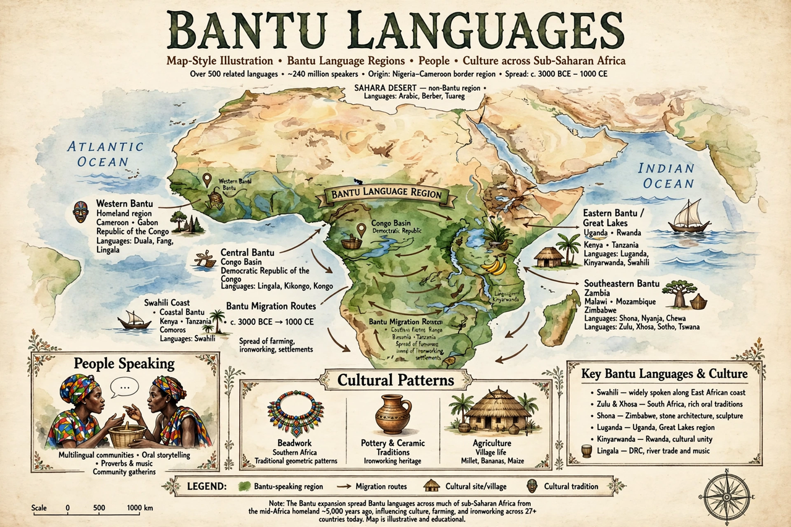

The Bantu languages are a language family spoken by the Bantu peoples of central, eastern and southern Africa, comprising several hundred languages.
From a homeland near present-day Cameroon/Nigeria, Bantu-speaking farmers and ironworkers expanded across sub-equatorial Africa over roughly the last 4,000–5,000 years — the Bantu expansion — shaping the continent's demography.
Bantu languages are tonal and agglutinative, famous for extensive noun-class systems (e.g. mu-/ba- for persons) with agreement across adjectives and verbs. Swahili became a lingua franca and an African Union working language interest; others are official in countries from Kenya to South Africa and Madagascar's neighbour states near Antananarivo.